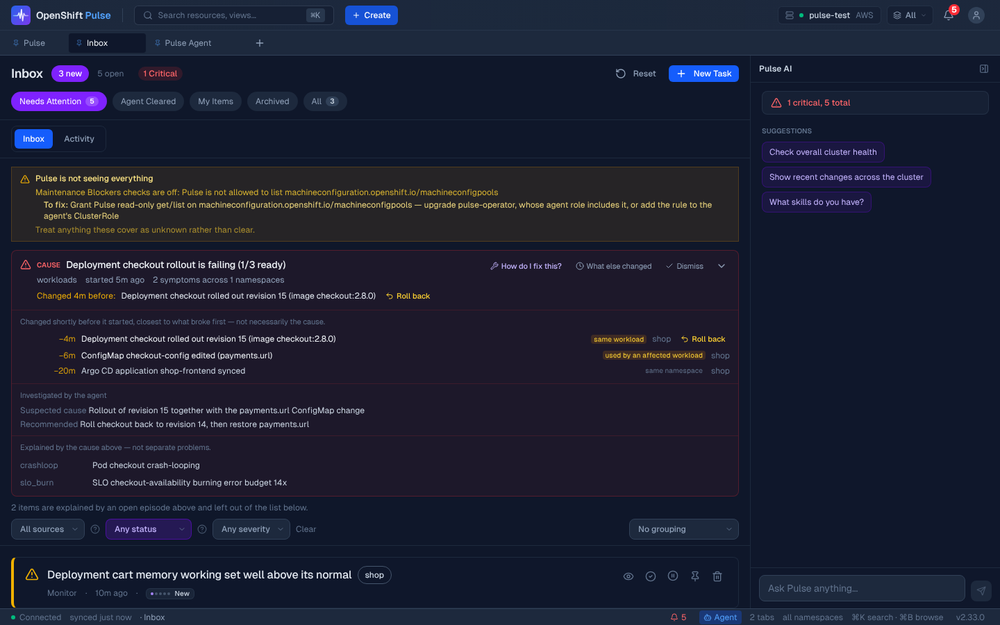
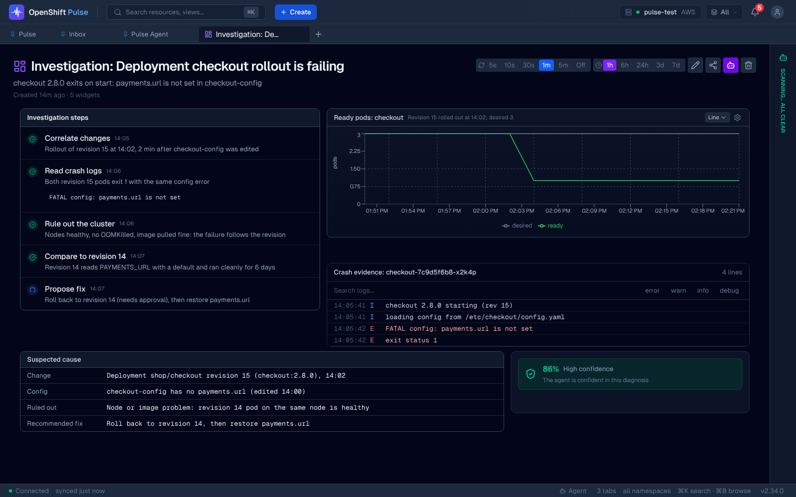
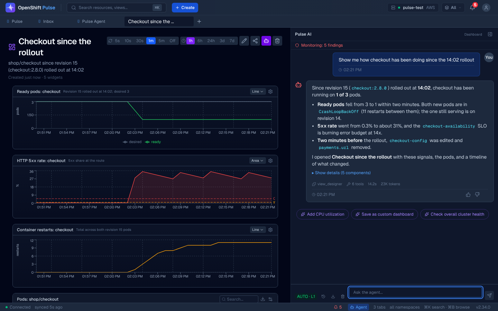
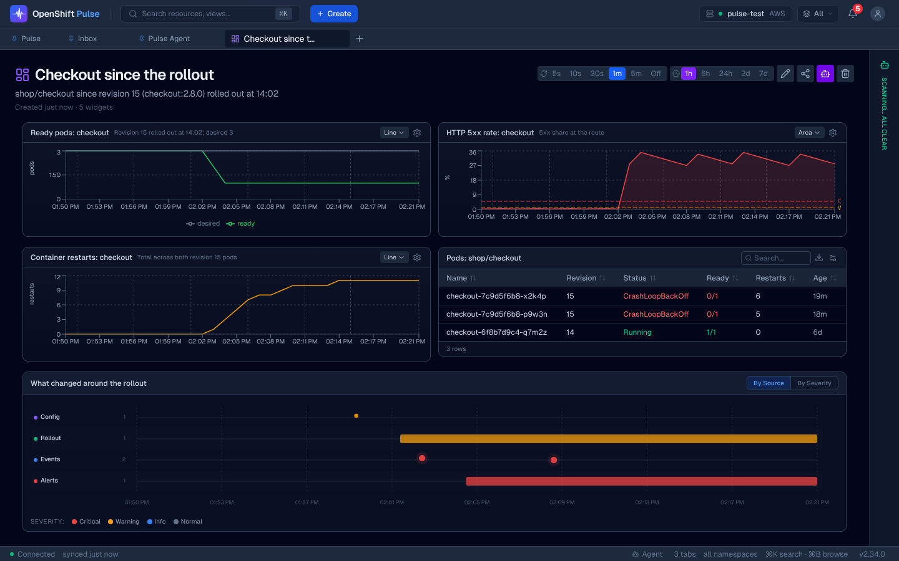
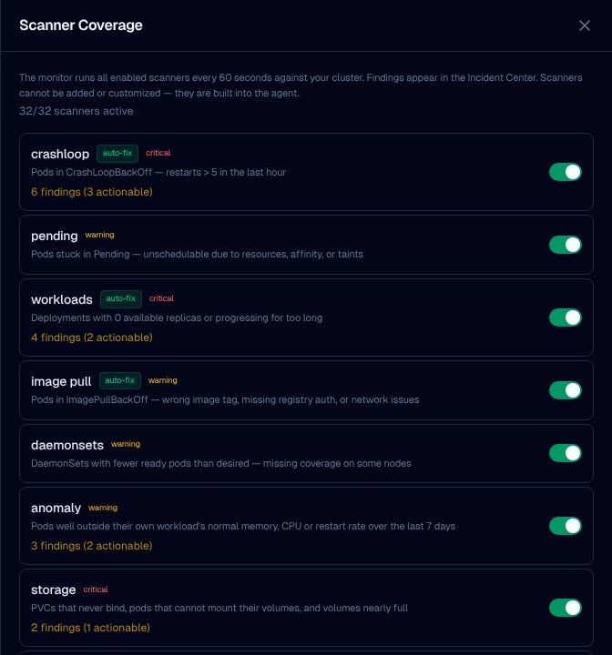
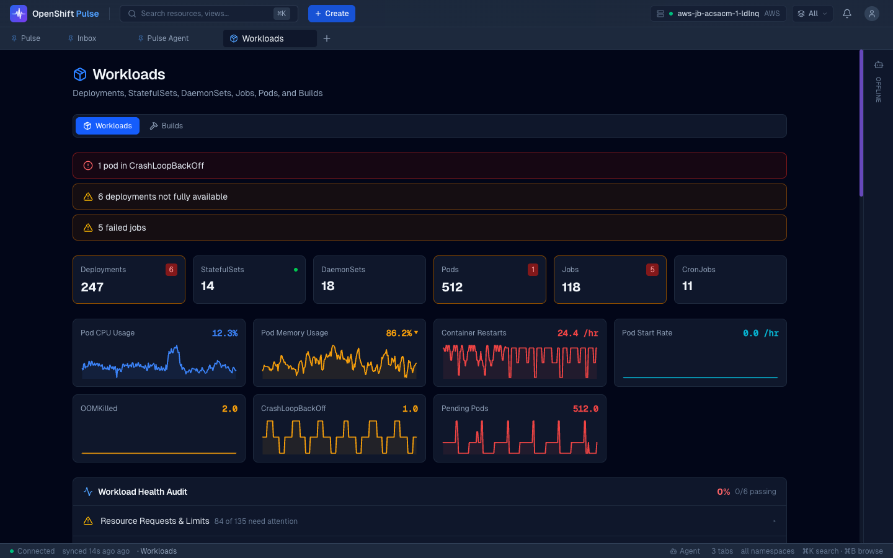
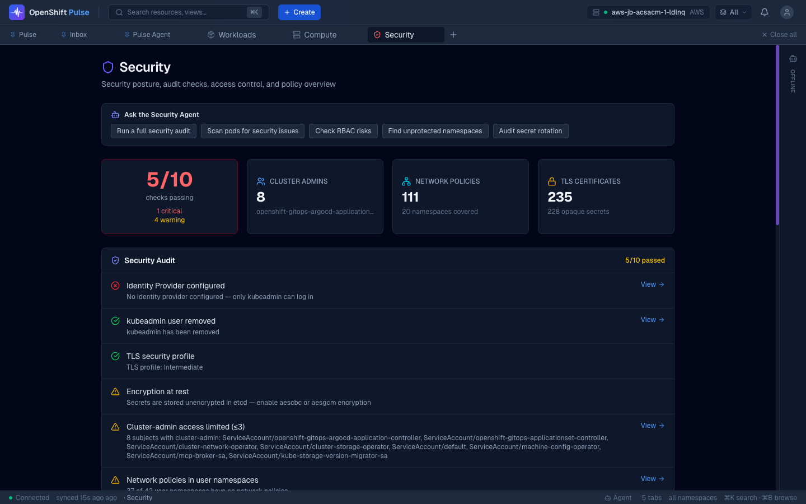
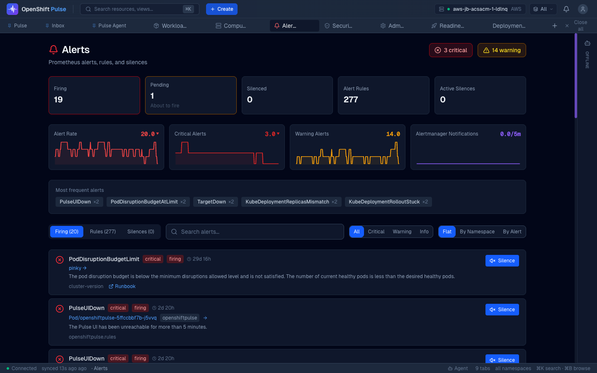
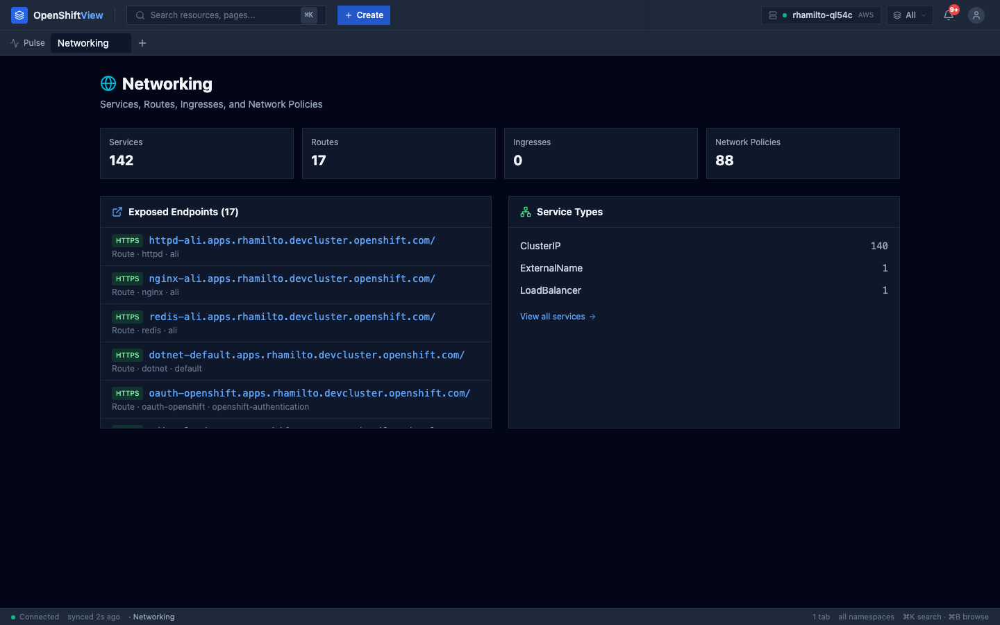
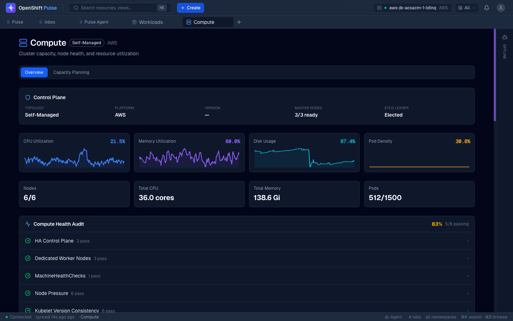

See what broke and why. Decide what happens next.
OpenShift Pulse is the console for Pulse Agent. Its inbox puts each incident next to the change that came before it, what the agent thinks caused it, and any fix waiting on your approval. Around it is a full OpenShift console for workloads, networking, storage and security.

See it in 36 seconds
Why it matters
Running OpenShift usually means a console, a metrics tool, a log viewer, a terminal and a chat window, and stitching them together in your head. The Pulse console puts them, and the agent, in one place.
Resources, metrics, logs, a terminal, alerts and the agent side by side, on the cluster you're looking at.
The inbox ranks what needs you and leads each incident with the change that probably caused it, and the fix to approve.
Every write names its cluster and target. A restart that is really a permanent delete says so, and stale scale counts are rejected.
Ask in plain English. The agent answers with live data and builds the dashboard you asked for, so new people are useful on day one.
See the proof
An AI that says “it's the rollout” is only useful if you can check. Pulse's agents record the evidence behind every diagnosis, and when you pick an incident up, Pulse builds a view of that evidence from live cluster data.
The agents investigate
With read-only tools. Every claim cites its signal: a metric, a log line, an event, a change. Evidence that argues against the diagnosis is recorded too, and lowers the confidence.
Pulse builds the proof
Three to five widgets chosen for this incident: the metric trend with its PromQL query, the changes before it, the steps the agents took. Built from live data when you pick the incident up.
You verify it
Agree, push back in the chat, or reject it. A diagnosis with no evidence is capped at low confidence, whatever the model claims.

Ask for a view, get one
Say what you want to see, in your own words. Pulse works out what you mean, queries your cluster, and builds a dashboard for exactly that question, with the tools it used shown as it goes.


- It understands intent
“Since the rollout”, “compared with last week”, “just the failing pods”: you describe the question, not the queries.
- It shows its work
Each tool and PromQL query appears as Pulse runs it, so you can see where every number came from.
- It's a real dashboard
Live, saved and versioned. Ask for a change in plain English, like “make that p99”, or share it with your team.
- It runs as you
Chat requests use your own OpenShift token, so a view only shows what you are allowed to see.
Everything in the console
OpenShift Pulse is a complete console for running a cluster, built around the agent. Here is what it covers.
Work incidents
The inbox is where problems arrive and get resolved.
- Findings grouped into incidents, led by the change that came just before
- Claim, snooze, escalate, pin or resolve; every item has an owner and a state
- Proposed fixes wait in review with their confidence and evidence
- An activity timeline of everything the monitor and the agent did
Ask Pulse from any screen
The agent is a panel away, wherever you are.
- Chat with context: the page and resource you are on go with the question
- Approve or deny a change inline, with the exact target shown
- Run phased plans and follow durable runs in Pulse Agent, Runs
- Thumbs up or down teaches the agent what helped
Browse and change anything
A full resource console, with guard rails.
- Every resource type as a sortable table, including custom resources
- YAML editing with server-side dry-run before you save
- Deployment revision history with one-step rollback
- Create from YAML, deploy an image in a form, or install a Helm chart
Workloads and infrastructure
Purpose-built views for each layer.
- Workloads, nodes, storage, networking and builds, each with a health audit
- Pod and node logs, and a terminal into a container
- Alerts with silences, and metrics charts from Prometheus
- Install operators from the catalog
Dashboards
Views the agent builds for you, kept and shared.
- Ask for a dashboard; it is saved with version history and sharing
- A 12-column grid of metrics, tables, charts and topology
- A strip of widgets past their thresholds, and “2x usual” comparisons
- A dependency graph that shows the blast radius of a change
See inside the agent
Nothing about its behaviour is hidden.
- Trust level, and the policy the server actually enforces
- Which scanners are running, and which cannot see and why
- Every tool, skill and MCP connection, with usage and analytics
- SLOs with error budgets, and what the agent has learned
Many clusters
One console across a fleet.
- Discover clusters through Advanced Cluster Management
- Switch clusters; every read and write follows the one on screen
- Cross-cluster views of health
- Argo CD applications and their sync state
Security and administration
The cluster-wide view, for the people who own it.
- A security audit with checks you can open and act on
- Users, groups and role bindings, and who can do what
- Cluster administration and readiness checks
- An installation check for the agent itself: AI backend, database, permissions
A look around








Scanner coverage is from v2.33.0 with sample data. The other screens come from an earlier release on a live cluster, so details may differ.
Nothing changes without a person saying yes
The console never decides on its own. These rules hold on every screen.
- Approvals name the target
An approval shows exactly what will change and where, and sends back the agent's one-time code for that action. Observe mode cannot approve anything: no hidden buttons, no shortcuts.
- Writes go to the cluster on screen
With several clusters connected, every read and write is tied to the cluster you are looking at. A change never lands on a different one.
- A restart that is really a delete says so
Restarting a pod deletes it. If nothing will recreate it, the confirmation says so and the button reads “Delete pod”.
- Stale numbers are refused
Scaling only applies to the version you were looking at. If the object changed underneath you, you get a conflict, not a replica count nobody chose.
- Your permissions, not the agent's
You sign in with OpenShift. The agent's shared credential stays on the server and never reaches the browser.
What's new
v2.35.027 October 2026
Pairs with agent v2.35.0 and operator v0.11.0
- Failures look like failures. Memory, SLOs, plans, approvals and the Toolbox show why something did not load or save, instead of an empty list or a form that closes as if it worked. Memory that is switched off says so.
- Evidence with its stance. Each piece of evidence says whether it supports or contradicts the cause and where it came from, and a 0% confidence is shown rather than hidden.
- A live inbox. Inbox changes arrive as they happen, approvals made elsewhere clear here, and archived items can be restored.
- Logs, watches and terminal you can trust. No dropped or doubled log lines, deleted objects disappear after a reconnect, and the terminal opens the app container on the right cluster.
Run it
The operator installs the console together with the agent, at matching versions. To work on the console itself:
pnpm install --frozen-lockfile
pnpm dev # http://localhost:9000; run oc proxy on 8001 for live data
pnpm verify # type-check, lint, tests and build- Install guideThe canonical steps, in the operator README
- Setup and developmentEverything you need to run the console locally
- Agent API contractHow the console and the agent talk
- Release acceptanceWhat is checked before a release, and what is not
- ContributingHow to send a change
- Pulse AgentThe agent this console is built for